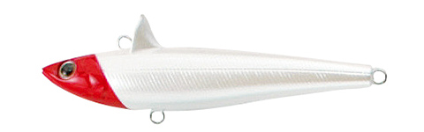
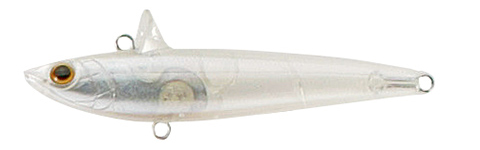
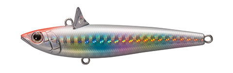
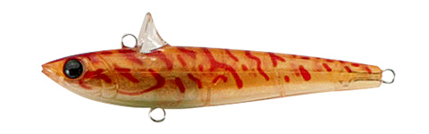
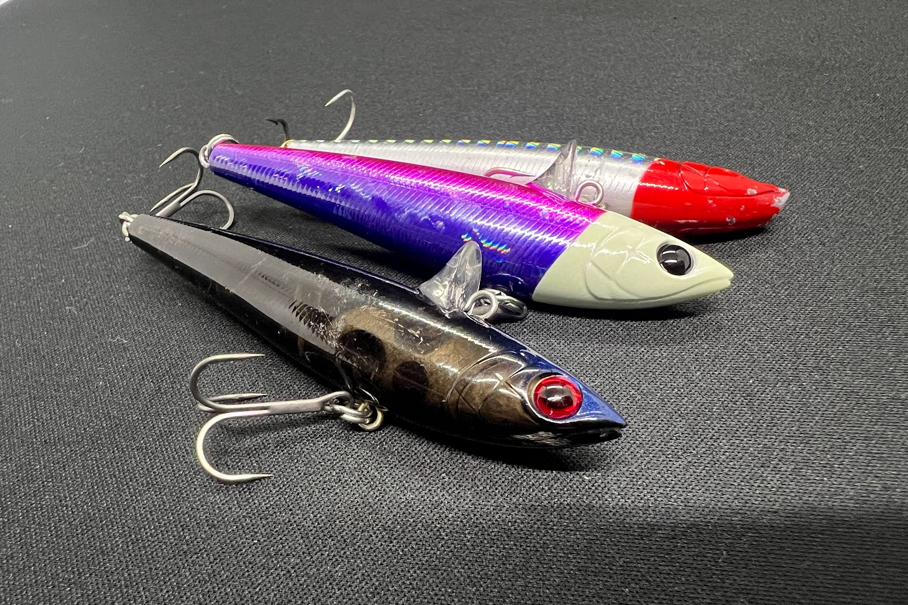

ローリングベイト77
唯一無二のローリングアクションは弱った魚の動きを完全再現。

- メーカー
- TACLEHOUSE
（タックルハウス） - 長さ
- 77mm
- 重さ
- 15g
- タイプ
- シンキングペンシル
- アクション
- ローリング
- ターゲット
魚種 - シーバス
- 開発者
- 坂本智春
ローリングベイト77の特徴・コンセプト
ローリングベイト77は、タックルハウスの名作ルアーで、シーバス界で数々の釣果を残しています。 バイブレーションらしい見た目ですが、アクションは“ローリング”で、ただ巻きでも自然に魚を誘うことができます。 背中のリップ形状とラインアイの位置が絶妙に設計されており、ミノーや従来のバイブレーションとは異なる独特の動きを生み出しています。 そのため、流れの速い河川や港湾などのさまざまなフィールドでも安定してアクションし、デッドスローからファストリトリーブまで幅広い速度に対応可能です。 また、小型ながら飛距離にも優れ、広範囲を探りながらも操作性は軽く、状況に応じた微妙なアクションの調整が容易です。 中層からボトムまで幅広くレンジをカバーできる汎用性の高さも魅力で、シーバスはもちろん、青物やフラットフィッシュなどでも使用できるルアーとして、多くのアングラーに支持されています。
おすすめの使い方・状況
ローリングベイト77は、中層からボトム付近まで幅広くレンジをカバーできるため、港湾部や河口、河川の中～下流域など、流れのあるフィールドで特に効果を発揮します。 飛距離は安定して50mほどは軽く飛ぶので、橋脚うちにもオススメです。 使い方はただ巻きでOK！巻き速度はかなり広く対応できますが、オススメはちょっと早めに巻くことです。反応がなければボトムドリフトも良いです。 根がかりしやすいポイントではボトムチューンを使用しましょう。
ワンポイント
リトリーブスピードによって感じる振動や抵抗感を覚えて、一定速度で巻くことが釣果のポイントです。 流れの変化あるところでバイトが多いため、抵抗感などでポイントを探っていきましょう。 着底してから一定速度のただ巻きで釣れます。ロリベを信じて投げてみて！
人気カラー

PWレッドヘッドレッドヘッドはシーバス定番カラー。弱ったベイトを演出できる

PHGクリア稚魚に見えるクリアカラー。ルアーサイズに悩んだときはこれ一択

SHレインボーレインボーはきれいで釣れる定番カラー

アカエビエビをイミテートしたカラー。ボトム付近のベイトを狙っているシーバスをロックオン
画像出典:TACLEHOUSE
使用インプレッション
実際に使用してみるとわかる安定感。飛行姿勢も良く、飛距離も十分。
スローからファストリトリーブまでしっかり手元に振動が来るのでわかりやすい。
シンキングルアーで沈降速度も速いので、着底がよくわかります。
着底後からただ巻きで釣れるのが初心者にもお勧めしたいポイントです。
ローリングベイトシリーズ
ローリングベイトのサイズラインナップはこちら。
ライトウェイト(LW)、スーパースローシンキング(SSS)、ボトムチューン(BT)があり、小刻みに幅広く展開しています。
ローリングベイト77（ROLLING BAIT 77）
ローリングベイト77（ROLLING BAIT 77）はTACKLEHOUSE（タックルハウス）のシンキングペンシルです。
シーバス界の名作ルアー「ローリングベイト」、通称ロリベ。バイブレーションのような見た目ながら、唯一無二のローリングアクションで弱った魚の動きを完全に再現し、ただ巻きだけで自然に魚を誘う定番中の定番です。

スペック
- メーカー
- TACKLEHOUSE（タックルハウス）
- 長さ
- 77 mm
- 重さ
- 15 g
- タイプ
- シンキングペンシル
- アクション
- ローリング
- ターゲット
- シーバス・青物・フラットフィッシュ
- 開発者
- 坂本智春
▼今すぐチェック

ローリングベイト77の特徴
「唯一無二のローリングアクション」
弱った魚を完全再現するシーバス界の名作
- バイブレーションの見た目でアクションはローリング 背中のリップ形状とラインアイの位置が絶妙に設計され、ミノーや従来のバイブレーションとは異なる独特のローリングアクションを生み出す。ただ巻きするだけで弱ったベイトの動きを自然に演出できる。
- デッドスロー〜ファストまで幅広い速度に対応 流れの速い河川や港湾などさまざまなフィールドで安定してアクション。デッドスローからファストリトリーブまで対応し、状況に応じた微妙なアクション調整が容易。中層からボトムまで幅広くレンジをカバーできる汎用性の高さも魅力。
- 小型ながら優れた飛距離と軽い操作性 77mm・15gのコンパクトボディながら飛距離に優れ、広範囲を探れる。操作感は軽く、シーバスはもちろん青物・フラットフィッシュにも対応する懐の深さで多くのアングラーに支持されている。
ローリングベイト77の使い方
使い方はただ巻きでOK。巻き速度はかなり広く対応できるが、おすすめはちょっと早めに巻くこと。
飛距離は安定して50mほど軽く飛ぶので橋脚うちにも有効なルアー。
反応がなければボトムドリフトも有効で、根がかりしやすいポイントではボトムチューン（BT）モデルを使おう。
ローリングベイト77の得意な状況
中層からボトム付近まで幅広くレンジをカバーできるため、港湾部や河口、河川の中〜下流域など流れのあるフィールドで特に効果を発揮。
飛距離が出るので橋脚まわりの遠いポイントや広範囲サーチにも強い。シーバスだけでなく青物・フラットフィッシュ狙いのパイロットルアーとしても機能する。
ワンポイント
リトリーブスピードによって感じる振動や抵抗感を覚えて、一定速度で巻くことが釣果のポイント。
流れの変化があるところでバイトが多いため、抵抗感の変化でポイントを探っていこう。
着底してから一定速度のただ巻きで釣れる。ロリベを信じて投げてみて！
人気カラー
レッドヘッドはシーバス定番カラー。弱ったベイトを演出できる。
稚魚に見えるクリアカラー。ルアーサイズに悩んだときはこれ一択。
レインボーはきれいで釣れる定番カラー。
エビをイミテートしたカラー。ボトム付近のベイトを狙うシーバスをロックオン。
画像出典:TACKLEHOUSE公式HP
使用インプレッション
実際に使用してみるとわかる安定感。飛行姿勢も良く、飛距離も十分です。
スローからファストリトリーブまでしっかりローリングアクションをして、手元に振動が来るのでわかりやすい。
シンキングルアーで沈降速度も速いので着底がよくわかる。着底後からただ巻きで釣れるのが初心者にもおすすめしたいポイント。
ローリングベイトシリーズ
ローリングベイトのサイズラインナップはこちら。ライトウェイト（LW）、スーパースローシンキング（SSS）、ボトムチューン（BT）があり、小刻みに幅広く展開しています。
- RB99 / RB99LW
- RB88 / RB88LW / RB88SSS
- RB77 / RB77LW / RB77SSS
- RB66 / RB66BT / RB66HVBT
- RB55 / RB55BT
- RB48 / RB48SSS
ローリングベイト77に似ているルアー
- メトム96s
- ローリングベイトシャッド
- ベゼルロール
関連リンク
- 公式サイト（TACKLEHOUSE）
- ほかのルアーを探す
ローリングベイトでまだ釣れていない人におすすめ記事